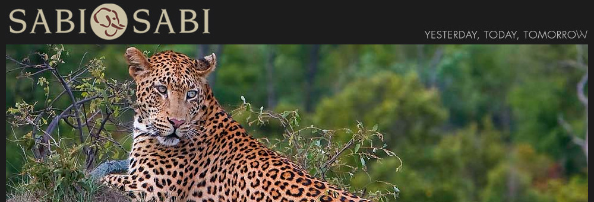

SABI SABI PRIVATE GAME RESERVE
SERVICES OFFERED BY DESTINATIONS
Media & Public Relations, Sales & Marketing and Advertising Representation.
In the heart of nature, within the Sabi Sand Reserve in Kruger National Park, emerges Sabi Sabi Private Game Reserve,
a place where the safari becomes an experience that touches all the senses.
Consists of four luxury five star lodges, Sabi Sabi Private Game Reserve have made standards in the tourism industry thanks to the luxury accommodation,
service, cuisine and exceptional wildlife offering to customers
.
The philosophy of "Yesterday, Today and Tomorrow" Sabi Sabi is derived from more than 100 years of experience in safaris,
a perfectly preserved in the magical history of each lodge, which also embodies the distinctive style of South Africa and its hospitality.
Selati Camp reflects the South African colonial era, when it began in the late nineteenth century buildings along the railroad Selati Railway Line
which linked the West to the East Coast.
Eight suites with lit lanterns, reflect the spell of the past.
With its 25 suites, including the Presidential Mandleve Suite, Bush Lodge, in a modern African style, is ideal to experience the atmosphere of today's South Africa.
Earth Lodge with its thirteen exclusive luxury suites, has been voted by Conde Nast Traveler USA as one of the top 52 places in the world.
Designed like no other lodge, has stunning architecture, an essential look and an innovative use of fabrics, fibers, light and space
.
Little Bush Camp, is the most exclusive lodge of the Sabi Sabi thanks to the 6 suites that provide confidentiality and intimacy for couples and honeymooners
and those looking for romance in contact with nature.
Each lodge is surrounded by many species of animals, birds and plants, including the "Big Five":
elephant, rhino, lion, leopard and buffalo.
Rangers and trackers of great experience and professionalism make the African safari experience unique, offering a rare opportunity to do incredible close encounters during each safari.
A charming place to live in all its spectacular appearance.